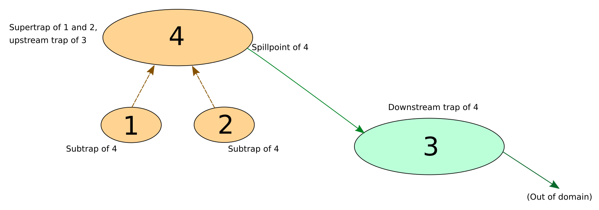

Simple synthetic example
The purpose of this example is to introduce some key concepts of SWIM by demonstration on an extremely simple synthetic terrain grid.
The synthetic terrain contains three low-level traps ('ponds', 'lakes'), and one higher-level trap. Its topological structure is shown in Fig. 1 below.
On this diagram we see that trap 1 and 2 are subtraps of trap 4, i.e. they are smaller traps contained within the footprint of trap 4. When trap 4 is filled with water and spills over, the water will flow downwards into downstream trap 3. When trap 3 is filled, the water will spill out of the surface domain.
The details of this will be made cleared below, as we demonstrate the concepts on the synthetic surface.
 Fig. 1: Topological structure of the traps in the synthetic surface
Importing packages and loading the surface
using SurfaceWaterIntegratedModeling
import CairoMakie, Images # for visualization and loading of textures
import ColorSchemes
import Graphs
using Pkg.ArtifactsThe package with SWIM testdata is provided as a Julia artifact, which can be accessed using the function datapath_testdata. We subsequently load and display the synthetic grid.
datapath = joinpath(datapath_testdata(), "data", "synthetic")
grid = loadgrid(joinpath(datapath, "synsurf.txt"))
# for ease of use, we create our own label of key colors found in the
# colorsheme `:Paired_12` used below
cmap = Dict(:blue => 2, :green => 4, :red => 6, :orange => 8,
:lilac => 10, :bright => 11)
# We also define some view angles that will come in handy
view1 = (CairoMakie.Vec(-83, 378, 197), CairoMakie.Vec(100, 114, -4.5), 0.68)
view2 = (CairoMakie.Vec(90, 494, 8.6), CairoMakie.Vec(100, 114, -4.5), 0.68);
# plot the grid
sf, fig, sc = plotgrid(grid, texture=fill(cmap[:bright], size(grid)),
colormap=ColorSchemes.:Paired_12,
colorrange=(1, 12), wireframe=true)
set_camerapos(sc, view1...)
Grid seen from above. Trap 1 and 2 from Fig. 1 can be seen on the upper left side, wheras trap 3 is seen downstream on the lower right side.
set_camerapos(sc, view2...)
Grid seen from the side. Here we see how trap 1 and 2 (right) constitute subtraps, or pockets, within a larger trap 4. As they gradually fill with water, two separate ponds for trap 1 and 2 will coalesce into a single pond for trap 4. We refer to trap 1, 2 and 3 as "lowest-level traps", i.e. traps that do not have subtraps. Trap number 4 is not a lowest-level trap, since it has trap 1 and 2 as subtraps.
Identifying traps, subtraps and spill path
The traps, spillregions (watersheds) and their topological structure is computed by the spillanalysis function. The result is stored in a TrapStructure.
tstruct = spillanalysis(grid);The numtraps function show the number of traps identified:
numtraps(tstruct)4This number includes all traps, whether they are lowest-level or not.
Examining the trap structure
The returned TrapStructure has the following fields:
[fieldnames(typeof(tstruct))...]12-element Vector{Symbol}:
:topography
:spillfield
:regions
:spillpoints
:trapvolumes
:subvolumes
:footprints
:lowest_subtraps_for
:supertraps_of
:agglomerations
:building_mask
:sinksWe will go through and explain these fields below.
Traps and trap regions
The :footprints field contains the footprint of all traps, i.e. all cells that are covered by each trap's extent. In the below code, we assign different colors to each trap, and plot them on the grid. Note that since the footprints of trap 1 and 2 are contained inside trap 4, we overwrite the footprint of trap 4 with the footprints of trap 1 and 2 in the code below so that they are all seen on the same figure.
# We generate a texture to drape the surface with, and color the cells within
# trap footprints in different colors.
tex = fill(cmap[:bright], size(grid))
tex[tstruct.footprints[4]] .= cmap[:orange]
tex[tstruct.footprints[1]] .= cmap[:red]
tex[tstruct.footprints[2]] .= cmap[:green]
tex[tstruct.footprints[3]] .= cmap[:blue]
drape_surface(sf, tex);
set_camerapos(sc, view1...)
Trap 1 and 2 are shown in red and green respectively, trap 3 in blue and trap 4 in orange.
Each of these traps have an associated watershed, or spill region. All water landing in a given watershed, will eventually reach and accumulate in the associated trap. The :regions field gives the spill regions for the lowest-level traps. (For a trap with subtraps, its spill region is the union of the spill regions of its subtraps).
The number of regions is therefore equal to the number of lowest-level traps. We can query this number with the numregions function:
numregions(tstruct)3As we can see, there are three spill regions in the grid, associated with lowest-level traps 1, 2 and 3. We here visualize these alongside the traps
tex = fill(cmap[:bright], size(grid))
# Indicate the spill regions
tex[tstruct.regions .== 1] .= cmap[:red]-1
tex[tstruct.regions .== 2] .= cmap[:green]-1
tex[tstruct.regions .== 3] .= cmap[:blue]-1
# Indicate the associated traps
tex[tstruct.footprints[1]] .= cmap[:red]
tex[tstruct.footprints[2]] .= cmap[:green]
tex[tstruct.footprints[3]] .= cmap[:blue]
drape_surface(sf, tex);
set_camerapos(sc, view1...)The spill region of trap 4 is the union of the blue and green regions on this plot. The beige-colored part of the surface does not spill to any trap; water landing in this region will flow out of the surface domain.
Spill field
The :spillfield field expressed the local direction of flow over the surface. For a given cell, the flow will be directed towards its neighbor cell along the steepest local slope. There are four or eight such neighbor cells, depending on whether one count the cells connected across diagonals (specified by the usediags argument when calling spillanalysis). We can visualize the spillfield by draping it directly on the surface:
drape_surface(sf, tstruct.spillfield .*2)
set_camerapos(sc, view1...)The eight different colors on this plot indicate the eight different local flow directions. The bright blue color, which makes up most of the grid's surface, correspond to a flow directed towards the lower edge of the grid.
Spillpoints
A trap's spillpoint is the point at which it will overflow when filled up. Information about spillpoints is found in the :spillpoints field of the TrapStructure. Let us inspect the content of the spillpoint of trap 1:
tstruct.spillpoints[1]Spillpoint(2, 19941, 19942, 9.202984432952984)[fieldnames(typeof(tstruct.spillpoints[1]))...]4-element Vector{Symbol}:
:downstream_region
:current_region_cell
:downstream_region_cell
:elevationThe :downstream_region field gives the region that the spillpoint leads into (2 in this case, since trap 1 spills into trap 2). The :current_region_cell and downstream_region_cell fields indicate the corresponding two cells adjacent to the spillpoint. The :elevation field provides the grid terrain value at the spillpoint.
We now plot all the spillpoints along with the traps and spill regions below:
for sp in tstruct.spillpoints
tex[sp.current_region_cell] = cmap[:orange]
tex[sp.downstream_region_cell] = cmap[:lilac]
end
drape_surface(sf, tex);
set_camerapos(sc,
CairoMakie.Vec(49.3, 156.7, 90.7), # set observer position
CairoMakie.Vec(86.8, 100.7, -3.3), # set observer target point
0.95) # zoom levelNote that trap 1 and 2 spill into each other. This is always the case with subtraps. Once both are filled, they will coalesce and water will start filling the rest of the supertrap (trap 4 in this case) until that trap's spillpoint is reached.
We can also visualize the "river" flowing from one spillpoint to the next, using the show_region_selection function, which we here apply to trap 3 and 4:
tex = show_region_selection(tstruct, selection=[3, 4],
region_color=cmap[:green]-1, trap_color=cmap[:green],
river_color=cmap[:red])
drape_surface(sf, tex);
set_camerapos(sc, view1...)Here, we can see how trap 4 spills into trap 3, and trap 3 spills out of the domain.
Trap volumes and subvolumes
The field :trapvolumes refers to the amount a water can hold when it is full:
tstruct.trapvolumes4-element Vector{Float64}:
152.12155399959005
683.4814301848555
1479.6266723286358
2511.348597305022We here see that the largest trap is 4, which is unsurprising as it subsumes trap 1 and 2. The :subvolumes field refers to the amount of water a trap's subtraps can hold:
tstruct.subvolumes4-element Vector{Float64}:
0.0
0.0
0.0
835.6029841844456Here, we see that the only trap with nonzero subvolumes is trap 4 (the other ones being lowest-level traps).
# Verify that the subvolume equals the sum of its subtrap volumes
tstruct.subvolumes[4] - (tstruct.trapvolumes[1] + tstruct.trapvolumes[2])0.0# The volume of trap 4 that is *not* covered by its subtraps:
tstruct.trapvolumes[4] - tstruct.subvolumes[4]1675.7456131205763Hierarchy of subtraps and supertraps
The field :lowest_subtraps_for lists all the lowest-level subtraps that are contained within a trap (note that a trap always includes itself):
tstruct.lowest_subtraps_for4-element Vector{Vector{Int64}}:
[1]
[2]
[3]
[1, 2]The field :supertraps_of lists all the supertraps of each lowest-level trap. In nested trap hierarchies, there may be many supertraps for a given lowest-level trap (also note that a trap always includes itself):
tstruct.supertraps_of3-element Vector{Vector{Int64}}:
[1, 4]
[2, 4]
[3]Trap 4 is not a lowest-level trap, and is therefore not included in the output here.
The subtrap/supertrap hierarchy constitutes a tree graph that is stored in the :agglomerations field and can be queried directly using the Graphs package:
# Subtraps of trap 4
Graphs.inneighbors(tstruct.agglomerations, 4)2-element Vector{Int64}:
1
2# Immediate supertrap of trap 1
Graphs.outneighbors(tstruct.agglomerations, 1)1-element Vector{Int64}:
4Tracking developments over time
The fill_sequence function can be used to track developments over time. The result is a sequence of SpillEvents, which can be used to rapidly determine the flow and accumulation state across the terrain at any given moment.
We first demonstrate fill_sequence without infiltration and with a constant rain rate.
weather = [WeatherEvent(0.0, 1.0)] # Rain with intensity 1.0 starting at time 0.0
seq = fill_sequence(tstruct, weather);The element type of seq is SpillEvent. We will not discuss its internal structure here. With the exception of :timestamp, its fields should not be accessed directly, but though the use of the following "accessor" functions:
Refer to the documentation for more information on the SpillEvent and its accessor functions.
for i = 1:length(seq)
print("Time: ", seq[i].timestamp, ", trap fill states: ", filled_at(seq, i), '\n')
endTime: 0.0, trap fill states: Bool[0, 0, 0, 0]
Time: 0.11912416131526238, trap fill states: Bool[1, 0, 0, 0]
Time: 0.1506676855723847, trap fill states: Bool[1, 1, 0, 0]
Time: 0.3980701297628829, trap fill states: Bool[1, 1, 1, 0]
Time: 0.452821600668053, trap fill states: Bool[1, 1, 1, 1]The printed info above shows the different points in time when a trap changes its state. We see that trap 1 fills up at t=0.119, trap 2 at t=0.15, etc. (In this case, the traps happen to be filled in the same order as they are numbered, but this is not the general case).
For a given event, we can get information on the amount of water in each trap:
amount_at(seq, 3) ## query the third event in the sequence4-element Vector{FilledAmount}:
FilledAmount(152.12155399959005, 0.11912416131526238)
FilledAmount(683.4814301848555, 0.1506676855723847)
FilledAmount(0.0, 0.0)
FilledAmount(0.0, 0.1506676855723847)The amount for each trap is given as a tuple of values; the first giving an amount of water, and the second the point in time where this amount was last computed. Note that in this case, the amounts in trap 1 and 3 were last computed at an earlier point in time than the current timestamp (0.15067), and these values are therefore not immediately useful. A trap only has its amount updated when an event cause a change to the traps inflow rate (e.g. upstream traps that fill up, or weather changes). In order to get all the updated amounts, we can use the current inflow rates and time since last update:
amounts = [e.amount for e ∈ amount_at(seq, 3)] ## amounts when last computed
dt = seq[3].timestamp .- [e.time for e ∈ amount_at(seq, 3)] ## time since last update
amounts += dt .* inflow_at(seq, 3) # add inflow since last update4-element Vector{Float64}:
192.40263447593526
683.4814301848555
560.0317872725539
0.0The runoff across the terrain also depend on which events have occured. We visualize the runoff at the last event (when all traps are filled):
tex = runoff_at(seq, 5)
filled_trapcells = vcat(tstruct.footprints[:]...) ## footprint of all cells
tex[filled_trapcells] .= extrema(tex)[2] # maximum value
sf_flow, fig_flow, sc_flow = plotgrid(grid, texture=tex, colormap=:Blues);
set_camerapos(sc_flow, view1...)
The flow is strongly concentrated along the streams exiting from each trap, drowning out any other detail. To make more details visible, we can use a logarithmic plot:
tex = log10.(runoff_at(seq, 5))
tex[filled_trapcells] .= extrema(tex)[2] # maximum value
sf_flow_log, fig_flow_log, sc_flow_log = plotgrid(grid, texture=tex, colormap=:Blues)
set_camerapos(sc_flow_log, view1...)Although the SpillEvents in seq describe the points in time where one or more trap statuses change, we may also be interested in the amount of water and flow state at some arbitrary point in time. For this, we can use the functions trap_states_at_timepoints and interpolate_timeseries.
Let us first specify some "arbitrary" points in time:
tpoints = [0.1, 0.3, 0.42]3-element Vector{Float64}:
0.1
0.3
0.42We can now compute the water content in all traps at this timepoint as follows:
tstates = trap_states_at_timepoints(tstruct, seq, tpoints)
water_content = [e[2] for e in tstates]
for time_ix = 1:length(tpoints)
print("At time: ", tpoints[time_ix], ":\n")
for trap_ix = 1:4
content = water_content[time_ix][trap_ix]
subtraps = Graphs.inneighbors(tstruct.agglomerations, trap_ix)
for i in subtraps
# add in water from subtraps
content += water_content[time_ix][i]
end
print(" Trap: ", trap_ix, " contains: ", content, " units of water.\n")
end
endHandling timepoint: 0.1
Handling timepoint: 0.3
Handling timepoint: 0.42
At time: 0.1:
Trap: 1 contains: 127.7 units of water.
Trap: 2 contains: 426.90000000000003 units of water.
Trap: 3 contains: 371.70000000000005 units of water.
Trap: 4 contains: 554.6 units of water.
At time: 0.3:
Trap: 1 contains: 152.12155399959005 units of water.
Trap: 2 contains: 683.4814301848555 units of water.
Trap: 3 contains: 1115.1 units of water.
Trap: 4 contains: 1663.8 units of water.
At time: 0.42:
Trap: 1 contains: 152.12155399959005 units of water.
Trap: 2 contains: 683.4814301848555 units of water.
Trap: 3 contains: 1479.6266723286358 units of water.
Trap: 4 contains: 2329.3199999999997 units of water.Note here that the volumes returned by trap_states_at_timepoints excludes the water in subtraps, so these have to be added in the loop above.
We can also visualize the trap fill states using interpolate_timeseries. We here generate textures where the filled parts of traps are shown in blue, the dry parts in orange, and active streams in red:
tex, = interpolate_timeseries(tstruct, seq, tpoints,
filled_color=cmap[:blue],
trap_color=cmap[:orange],
river_color=cmap[:red])
drape_surface(sf, tex[1])
set_camerapos(sc, view1...)At time 0.1
drape_surface(sf, tex[2])
set_camerapos(sc, view1...)At time 0.3
drape_surface(sf, tex[3])
set_camerapos(sc, view1...)At time 0.42
Infiltration
The speed and degree to which traps get filled will strongly depend on the permeability of the surface. SWIM provides a simplified infiltration model with a fixed infiltration rate, which may be an acceptable approximation over limited timespans. The way of doing this is to define an infiltration map, and pass it along to fill_sequence. The steps are shown below:
First we define an infiltration map, prescribing an infiltration rate at every cell in the grid. We here define an infiltration rate that is 0 (impermeable) at the upper part of the grid, and 2.0 at the lower part:
infil = fill(0.0, size(grid));
infil[1:110, 1:end] .= 2.0;
sf_infil, fig_infil, sc_infil = plotgrid(grid, texture=infil,
colormap=ColorSchemes.:rainbow,
colorrange=(0, 2))
set_camerapos(sc_infil, view1...)In this figure, the purple part of the surface is impermeable, and the red part has an infiltration rate value of 2.0.
Note that the infiltration rate is here set to be higher than the precipitation rate given by weather. As such, the only way the lower trap can fill up is by receiving runoff from the impermeable part of the grid. This will significantly delay the moment when it gets filled.
seq2 = fill_sequence(tstruct, weather, infiltration=infil)
for i = 1:length(seq2)
print("Time: ", seq2[i].timestamp, ", trap fill states: ", filled_at(seq2, i), '\n')
endTime: 0.0, trap fill states: Bool[0, 0, 0, 0]
Time: 0.11912416131526238, trap fill states: Bool[1, 0, 0, 0]
Time: 0.1506676855723847, trap fill states: Bool[1, 1, 0, 0]
Time: 0.452821600668053, trap fill states: Bool[1, 1, 0, 1]
Time: 0.737445617512239, trap fill states: Bool[1, 1, 1, 1]We see that the order in which the traps fill up is now different than in the case without infiltration. The time for trap 3 to fill up is significantly longer.
We inspect the trap states at the same timepoints as in the impermeable case above. In addition, we include an additional timepoint at t=0.60.
tpoints2 = [0.1, 0.3, 0.42, 0.60]
tex, = interpolate_timeseries(tstruct, seq2, tpoints2,
filled_color=cmap[:blue],
trap_color=cmap[:orange],
river_color=cmap[:red])
drape_surface(sf, tex[1])
set_camerapos(sc, view1...)At time 0.1
drape_surface(sf, tex[2])
set_camerapos(sc, view1...)At time 0.3
drape_surface(sf, tex[3])
set_camerapos(sc, view1...)At time 0.42
drape_surface(sf, tex[4])
set_camerapos(sc, view1...)At time 0.60
Here, we can see that trap 3 does not start to fill up before trap 4 starts spilling over.
To better understand what is going on, we can inspect the flow pattern at the time of the last event:
runoff = runoff_at(seq2);The runoff field is defined such that positive values represent overland flow intensity, whereas negative values represent remaining infiltration capacity. First, we are interested in the part of the terrain that remains dry, i.e. local infiltration exceeds the combined value of precipitation and inflow from upstream:
dry_terrain = Float64.(runoff .< 0.0)
dry_terrain[filled_trapcells] .= false ## submerged terrain should be considered wet
# regardless of inflow and infiltration rates
drape_surface(sf_infil, dry_terrain)
set_camerapos(sc_infil, view1...)From this figure, where dry terrain is shown in green, the following observations can be noted:
- The terrain surrounding trap 3 is dry, and its only inflow comes from the stream spilling out from trap 4.
- Large part of the terrain is wet even where infiltration rates exceed precipitation rate, due to upstream runoff.
We can use a log plot to visualise the flow pattern on the wet part of the surface:
tex_flow = log10.(max.(runoff, eps()))
tex_flow[runoff .< 0.0] .= minimum(tex_flow[:])
tex_flow[filled_trapcells] .= maximum(tex_flow[:])
drape_surface(sf_flow_log, tex_flow)
set_camerapos(sc_flow_log, view1...)One interesting thing to note from this plot is how overland flow builds up across the impermeable part of the surface, and then gradually attenuates as the flow reaches the permeable region.
Changing weather
It is possible to model a changing weather by sending multiple weather events to the fill_sequence function. As a demonstration, we extend our weather vector with another event, stating that the rain rate drops to zero at time 0.8.
weather = [WeatherEvent(0.0, 1.0),
WeatherEvent(0.8, 0.0)]
seq3 = fill_sequence(tstruct, weather, infiltration=infil);In the time before the weather change, the sequence is similar to the previous one we inspected above. We add new timepoints at t=0.8 (when rain ceases), and t=2.1 (well after rain has stopped).
tpoints3 = [0.3, 0.60, 0.8, 2.1]
tex, = interpolate_timeseries(tstruct, seq3, tpoints3,
filled_color=cmap[:blue],
trap_color=cmap[:orange],
river_color=cmap[:red])
drape_surface(sf, tex[1])
set_camerapos(sc, view1...)
At time 0.3. This is identical to the previous case above.
drape_surface(sf, tex[2])
set_camerapos(sc, view1...)
At time 0.6. This is also identical to the previous case above.
drape_surface(sf, tex[3])
set_camerapos(sc, view1...)At time 0.8. This is when rain stops.
drape_surface(sf, tex[4])
set_camerapos(sc, view1...)At time 2.1. We note that the water level in trap 4 on the impermeable part of the terrain remains unchanged, whereas the water level in trap 3, on the permeable part of the domain, has dropped significantly.
This page was generated using Literate.jl.